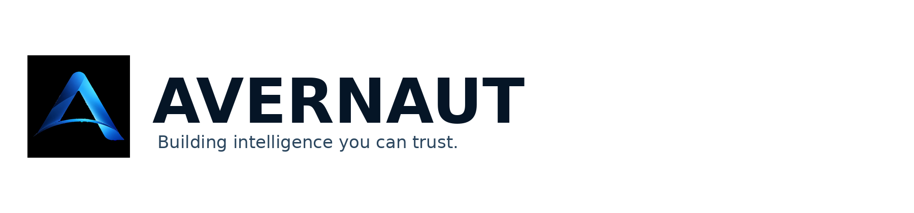

We build trustworthy AI, cybersecurity, and autonomous systems for the connected world.

AI systems are moving from generating information to making decisions and taking actions. Avernaut builds the technologies needed to make that autonomy safer, verifiable, and operationally trustworthy.
Intelligence designed for autonomous decision-making where explainability, control, and safety matter.
Verification-first defense for connected infrastructure, from IoT and Edge to Cloud and operational environments.
Technologies that bridge AI decisions and real-world actions safely.
Verified Autonomous Defense. INVERIQ verifies AI-generated cybersecurity actions before they are allowed to reach protected infrastructure.